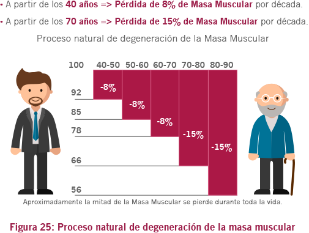

02. Sarcopenia
La integridad del sistema locomotor es fundamental para la movilidad. La disminución de la movilidad es uno de los factores que conducen a la llamada “síndrome de la fragilidad del anciano”, lo que implica en un aumento de la morbilidad y de la mortalidad.
La velocidad de la pérdida muscular (Figura 25) es de cerca del 8% por década hasta los 70 años, cuando entonces sube para el 15% por década, resultando en una pérdida total de masa muscular en el transcurso de la vida de cerca del 50%.
